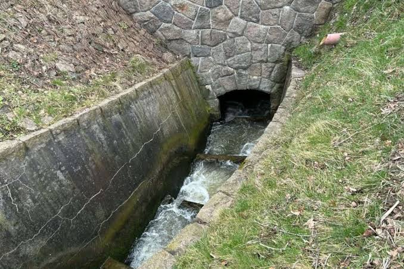
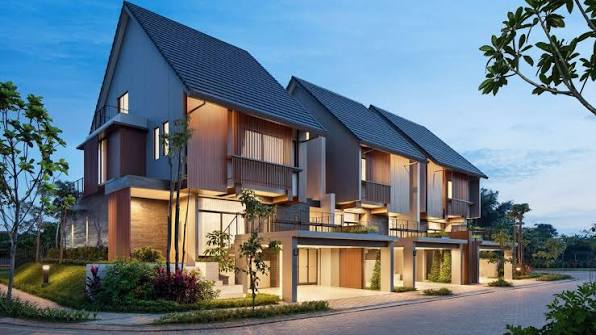

Desain Jembatan Bentang Pendek
Eksplorasi desain jembatan dengan material baja ringan, mencakup perhitungan beban dan analisis struktur datar.
StrukturCivil Engineering
Calon Civil Engineer - Teknik Sipil
Saya sedang belajar teknik sipil dengan ketertarikan pada struktur, infrastruktur, dan solusi bangunan yang berdampak.
Lihat Proyek Hubungi Saya
Saya percaya setiap desain struktur harus aman, efisien, dan mampu mendukung perubahan.
About
Saya Kenzie, siswa kelas X SMA IPA dengan minat besar pada dunia teknik sipil, terutama struktur dan infrastruktur. Saya senang membaca, menikmati gim online, dan terus mengembangkan kemampuan berpikir kritis serta pemecahan masalah. Bercita-cita menjadi seorang Civil Engineer yang menghadirkan solusi inovatif untuk pembangunan masa depan.
Saya suka perkembangan dunia teknik sipil, mengembangkan kemampuan diri, serta membangun solusi untuk meningkatkan kualitas hidup dan lingkungan.
Projects
Eksplorasi desain jembatan dengan material baja ringan, mencakup perhitungan beban dan analisis struktur datar.
Struktur
Perencanaan sistem drainase untuk kawasan perumahan dengan mempertimbangkan debit banjir dan kontur lahan.
Hidrolika
Desain tata letak perumahan sederhana dengan mempertimbangkan sirkulasi, ruang terbuka hijau, dan efisiensi lahan.
PerencanaanContact
Terbuka untuk diskusi seputar teknik sipil, kolaborasi proyek, atau sekadar ngobrol soal konstruksi dan infrastruktur.